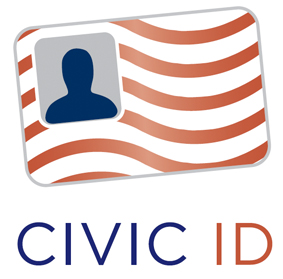

verified claims
Microsoft U-Prove Technology Featured at Privacy Identity Innovation 2010
Seattle WA – September 27, 2010 – Last month, at the Privacy Identity Innovation 2010 conference in Seattle, Microsoft Senior Program Manager Christian Paquin hosted a session on the U-Prove minimal disclosure technology. ICF Executive Director Drummond Reed interviewed Christian for the following in-depth Q&A about U-Prove.
Q: First, can you tell me what is U-Prove?
A: U-Prove is an innovative privacy-enhancing security technology that can help people protect their identity-related information. U-Prove combines the security of PKI (public key infrastructure) with the flexibility of federation technologies that allow people to link identities across domains. And it does all this while providing privacy-by-design. That makes the U-Prove technology ideally suited to protect claims (attributes) in user-centric identity systems.
Q: Microsoft made a major announcement about U-Prove at RSA in March. What was the essence of that announcement?
A: The initial release of the U-Prove technology we announced at RSA consisted of two parts. First, we released the U-Prove specifications, published under the Open Specification Promise (OSP), so anyone can implement and use them freely and for any purpose. The first specification describes the core cryptographic protocols, and the second is a WS-Trust / OASIS IMI profile (the protocol used for Information Cards). We also released two open-source Software Development Kits (SDK) – one in C#, one in Java – implementing the core cryptographic specification.
Acxiom Announces Beta Program for Online Identity Card
Information Card Foundation member Acxiom® Corporation (NASDAQ: ACXM), a global leader in interactive marketing and risk mitigation services, announced a beta program for the Acxiom Identity Card. This program uses Information Card technology to enable retail merchants, corporations, financial institutions and other organizations to offer a privately branded identity card to their customers.
"Businesses should benefit with a decrease in internal consumer authentication and fraud detection costs if they encourage their customers to adopt a digital identity card," says Tim Christin, senior vice president of Acxiom's risk mitigation division. "And in turn, their customers should benefit by the streamlined online experience with a single sign-on system, the elimination of user names and passwords, and the reduced risk of identity fraud."
A digital identity card allows consumers to establish new online accounts and log in to existing accounts with a unique, encrypted identity that is stored on the consumer's personal computer. This is the digital equivalent of a privately branded identity card that is typically carried in a person's wallet.
Information Cards Facilitate Grassroots Democracy

Information Cards can Authenticate Online Petitioners While Protecting Anonymity
- In 1215, King John signed the Magna Carta, which recognized the right of the barons to petition the crown.
- In 1775 Thomas Paine wrote in Common Sense that "... frequent interchange ...between the electors and the elected ... will establish a common interest with every part of the community ... they will mutually and naturally support each other, and on this depends the strength of government, and the happiness of the governed."
- By 1789, Founders of the United States embedded the right to petition into the Constitution in the First Amendment: "Congress shall make no law ... abridging ... the right of the people ... to petition the Government for a redress of grievances."
Today petitioning has become an instrument of mass politics, designed to make a point, not a plea. To quote the First Amendment Center:
"Petitioning" has come to signify any nonviolent, legal means of encouraging or disapproving government action. The direct appeal and individualized response that once marked petitioning belong to a more organic past when leaders knew petitioners by name. No branch of the government today is equipped to provide such personal attention.
Sites like The Petition Site provide tools to create online petitions, but you need to fill out the usual form -- name, address, etc. Not only is this work, but by signing a petition, you may create a record that you later regret. To avoid this, you might choose to enter a false address (Beverly Hills 90210). Verifying signatories of an online petition is a laborious and lengthy process.
The Digital Oracle Comes 'Of Age'
For the past few years, analysts such as Bob Blakley and Jamie Lewis have predicted that someday, with the right identity technology, a 'digital oracle' could issue abstract but trusted declarations such as "a specific person is above or below a specific age" without needing to reveal the actual birthdate.
In mid-October a story published on theonion.com shouted to the world that, for the first time in history, someone pressed the “I'm under 18 button” on a pornographic site, denying themselves a treasure trove of “adult content.” This story highlights a glaring defect with Internet identity: after more than 20 years of evolution, there is still no way to prove how old we are (let alone whether we are a dog or not).
Last week that finally changed. Equifax introduced the first digital Information Card that allows anyone with a credit record to make verified claims -- specifically, an "I'm over 18" claim. This new age verification service was introduced by Equifax in conjunction with Azigo, makers of the Azigo Information Card selector. Equifax acts as the identity provider for the Equifax Over 18 I-Card. This card is produced by the Azigo CardPress service, and works with any Information Card selector.
With Information Card technology, Equifax can attest online whether a person is older than a specific age without needing to divulge actual identifying information such as the real birthdate. A website that accepts the Equifax Over 18 I-Card doesn't have to trust the user asserting this information; it can trust Equifax.